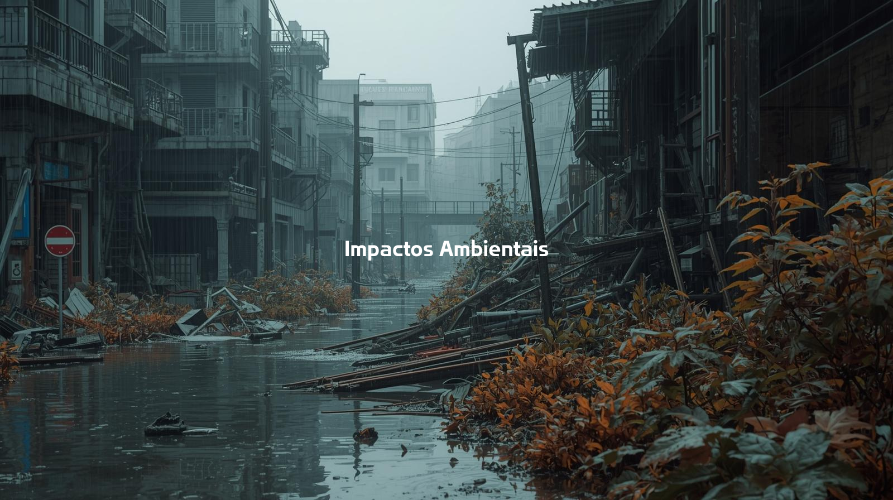

A discussão sobre o impacto ambiental causado pela mineração de criptomoedas tem se intensificado nos últimos anos. À medida que essa atividade tecnológica se expande, surgem também preocupações sobre seu consumo energético, sua geração de resíduos e suas consequências para o clima. Por isso, compreender esses efeitos tornou-se essencial para avaliar os desafios ambientais do setor e buscar caminhos mais sustentáveis para o futuro.
Para a mineração de criptomoedas é necessário utilizar hardwares específicos, capazes de realizar cálculos complexos dos algoritmos de forma rápida e muito mais eficiente do que um computador convencional. Os meios mais comuns são os ASICs (Application-Specific Integrated Circuits) e as GPUs (placas de vídeo potentes).

Projetados especificamente para um algoritmo de mineração, conseguindo realizar trilhões de cálculos por segundo. Devido a alta eficiência consomem muita energia, em torno de 2.500 a 3.500 watts (2,5 a 3,5 kWh por hora), o equivalente a manter um chuveiro elétrico ligado por cerca de 3 horas.
Mais versáteis e podem ser usadas em diferentes tipos de mineração, embora sejam menos eficientes que os ASICs. Seu consumo é bem menor, variando entre 200 e 400 watts por hora, similar ao gasto de uma geladeira no mesmo período.
Segundo a Agência Internacional de Energia (AIE), em 2023 a mineração de criptomoedas como um todo consumiu aproximadamente 130 terawatts-hora (130 TWh) de eletricidade, sendo o Bitcoin responsável pela maior parte, cerca de 120 TWh. Esse valor representa em torno de 0,6% do consumo global de energia. A AIE projeta que, até 2026, o consumo da mineração de criptomoedas alcance 160 TWh, superando o gasto energético da Argentina (144,1 TWh) e aproximadamente o dobro do consumo do Peru (80 TWh).
| Características | Proof of Work (PoW) | Proof of Stake (PoS) |
|---|---|---|
| Funcionamento | Competição para ser o primeiro a resolver o algoritmo e o vencedor é recompensado com criptomoedas. | Validadores são escolhidos pela quantidade de moedas que possuem e recebem recompensas. |
| Consumo de Energia | Muito alto, devido à complexidade dos cálculos. | Muito menor, pois não há mineração computacional pesada. |
| Velocidade | Mais lenta. | Mais rápida. |
| Exemplos | Bitcoin, Litecoin, Dogecoin. | Ethereum, Cardano, Polkadot. |
A mineração de criptomoedas, como o Bitcoin, se espalhou pelo mundo e se tornou uma atividade economicamente relevante. No entanto, esse crescimento vem acompanhado de uma preocupação crescente: os impactos ambientais da prática.
Para minerar moedas digitais, são utilizados computadores altamente potentes, que consomem uma enorme quantidade de energia elétrica, muitas vezes gerada a partir de fontes não renováveis e poluentes. Além disso, o constante avanço da tecnologia e o descarte incorreto de hardware contribuem para o aumento do lixo eletrônico, um problema ambiental cada vez mais agravado.
Hoje em dia, minerar criptomoedas gasta tanta energia quanto o consumo de alguns países inteiros. Principalmente quando a energia vem de fontes poluentes, como carvão e petróleo. Nesses casos, a mineração agrava a emissão de gases que causam o efeito estufa, o que só piora a crise climática que já vem se vivendo. Isso tudo não é só um problema para o meio ambiente, mas também levanta questões éticas. Será que vale mesmo a pena continuar com uma tecnologia que custa tão caro pro planeta?
A mineração de criptomoedas apresenta diversos problemas ambientais, principalmente devido ao seu alto consumo de energia e à grande quantidade de lixo eletrônico gerado pela rápida obsolescência de equipamentos como ASICs e GPUs. Quando descartados de forma inadequada, esses componentes liberam substâncias tóxicas que podem contaminar o solo e os recursos hídricos. Além disso, grande parte da energia utilizada na mineração ainda provém de combustíveis fósseis, contribuindo significativamente para a emissão de CO₂ na atmosfera. Diante desse cenário, práticas de reciclagem e o desenvolvimento de tecnologias mais duráveis tornam-se fundamentais para reduzir os impactos ambientais associados à atividade.